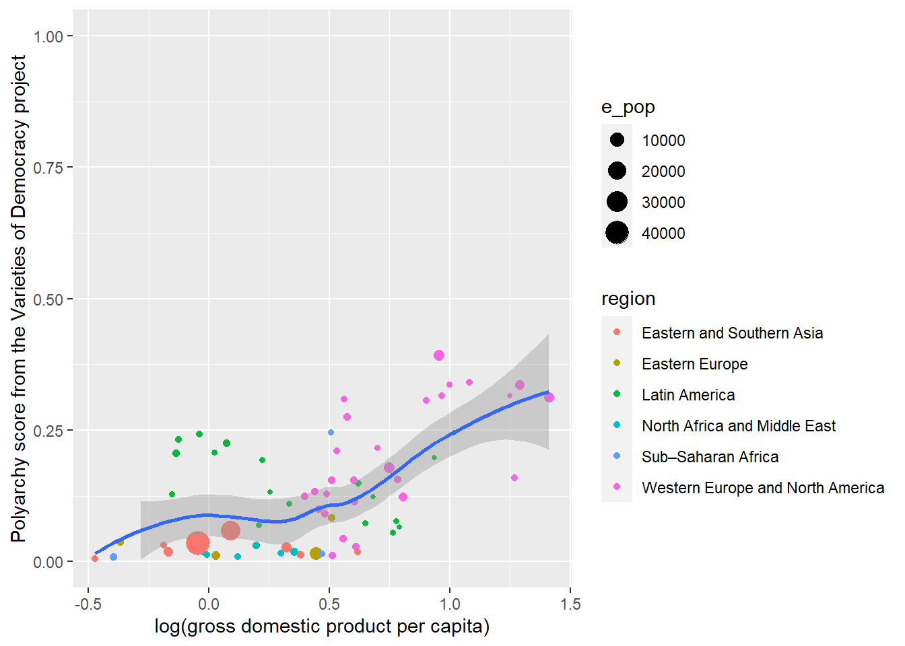
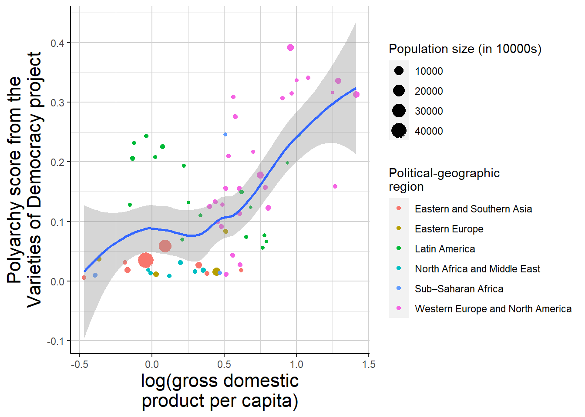

Data visualization is a crucial part of quantitative political science:
Visualization will you help you understand the structure and patterns in your data and the implications of your statistical models!
Visualization is crucial for communicating your insights about data and models to others! As argued by Kastellec and Leoni (2007), the presentation of both summary statistics and regression results can often be greatly improved by using graphs instead of tables!
We will use ggplot2 to make our visualizations in R. The ggplot2 package implements a “layered grammar of graphics” (Wickham 2010), providing a coherent and flexible framework for building and customizing our visualizations. Thus, instead of relying on a few standardized types of graphs as we would in many other graphics packages, we can tailor our visualizations to our specific research question and to our aesthetic preferences.
As you will see, ggplot2 is built around the idea of making visualizations layer by layer. This makes it easy to iteratively add layers to customize your visualization making it look exactly like you want it to.
The basics of ggplot2
Let’s start by consider the basics of how ggplot2 works:
The three components of any graph:
In ggplot2, all visualizations will be based on the following three components:
A (tidy) dataset.
A set of aesthetic mappings connecting variables in the dataset to the visual properties of the graph. These will often be coordinates, but they can also be things that colors and sizes.
One or more layers describing how observations from the dataset are displayed in the visualization. These layers are usually geometric objects (or geoms in the ggplot2 jargon) such as lines, points, or polygons (Wickham, Navarro, and Pedersen, n.d.).
You will build your visualization layer by layer. You will start by supplying the data and declaring the aesthetic mappings, before adding geometric objects and other layers to your graphs using + between each layer.
Let’s consider an example. We’ll reload the Varieties of Democracy data with levels of democracy and estimated gross domestic product per capita measured in 1848, which we introduced here. The data are taken from historical V-Dem Knutsen et al. (2019)], but the GDP/capita and population estimates that we will look at are from Fariss et al. (2022).
We will visualize this data. The first step is to feed the data to the `ggplot() function, which will open an empty canvas:
library(ggplot2) ggplot(data = countries_1848)
Using the %>% operator, we can also write the above code like this:
countries_1848 %>%ggplot()
The second step is to add some aesthetic mappings. If we want to visualize the relationship between v2x_polyarchy and log_e_gdppc in a scatter plot, we will need to map the variables to the x and y axis in a coordinate system. We can do so using aes(), which should be supplied to the mapping argument of ggplot(). Adding the mapping will add a coordinate system with an x-axis and a y-axis to our canvas:
ggplot(data = countries_1848,mapping =aes(x = log_e_gdppc, y = v2x_polyarchy))
The third step is to add a layer with a geometric object, using one of the geom_-functions. For a scatter plot, the obvious choice is to add points, which we can do using geom_point():
ggplot(data = countries_1848, mapping =aes(x = log_e_gdppc, y = v2x_polyarchy))+geom_point()
Adding additional geometic objects
Points are not the only reasonable option. We could instead have used geom_text() to display the name of each country in the graph. If so, we will need an additional aesthetic mapping, connecting labels to be displayed in the graph with a relevant variable in our dataset:
Notice that we add the different geoms layer by layer using + between each layer allowing us to iteratively customize our graph.
Notice also that some geom_ functions may have additional arguments that can help you customize your graph. For the geom_text() we used the nudge_y argument to move each label slightly to the top of each point in the graph. A key thing to remember is that if arguments are not used to map variables from the data to aesthetic attributes, these arguments should not be supplied to aes() but just to the relevant geom_ function.
Statistical summaries
Some geoms will involve summarizing or transforming the underlying data. For instance, we can add a linear regression line to the scatter plot.
We currently have two variables in our visualization, one mapped to the x-axis and one mapped to the y-axis. What if we want to include more variables in the visualization?
We can add other variables to other aesthetic attributes of the visualization, like different colors, different shapes, different line types, different sizes, etc. Like for x and y, we will use aes() to map variables to these various aesthetic attributes.
To illustrate, we will add some complexity by adding some more variables to our dataset.1
Code
library(vdemdata)countries_1848 <- vdem %>%filter(year ==1848) %>%select(country_name, country_id, year, v2x_polyarchy, e_gdppc, e_pop, e_regionpol) %>%mutate(log_e_gdppc =log(e_gdppc),region =case_when(e_regionpol ==1~"Eastern Europe", e_regionpol ==2~"Latin America", e_regionpol ==3~"North Africa and Middle East", e_regionpol ==4~"Sub–Saharan Africa", e_regionpol ==5~"Western Europe and North America", e_regionpol >5~"Eastern and Southern Asia")) %>%select(-e_regionpol)
The top rows of the expanded dataset look like this:
head(countries_1848)
country_name country_id year v2x_polyarchy e_gdppc e_pop log_e_gdppc
1 Mexico 3 1848 0.226 1.074 823.762 0.0713900
2 Sweden 5 1848 0.309 1.756 360.610 0.5630385
3 Switzerland 6 1848 0.315 2.634 249.157 0.9685036
4 Japan 9 1848 0.027 1.379 3387.306 0.3213586
5 Burma/Myanmar 10 1848 0.031 0.829 421.038 -0.1875351
6 Russia 11 1848 0.016 1.560 7320.535 0.4446858
region
1 Latin America
2 Western Europe and North America
3 Western Europe and North America
4 Eastern and Southern Asia
5 Eastern and Southern Asia
6 Eastern Europe
We’ve added a variable measuring the population of each state (e_pop) and a variable measuring their political-geographic region (region).
As a first extension, let’s use color to distinguish between states from different geographic regions:
ggplot(data = countries_1848, mapping =aes(x = log_e_gdppc, y = v2x_polyarchy, label = country_name, color = region))+geom_text(nudge_y =0.01)+geom_point()+geom_smooth(method ="loess")
Adding color = region changes the color of the points, lines, and text, and we now automatically get a legend explaining how color is mapped to the variable region.
Because color is mapped to a variable in the dataset and color is also an aesthetic attribute of geom_smooth(), we get different smoothed lines for each region. Maybe this is a bit too much and we just want the points and to vary in color. If so, we can that specify this mapping only for geom_point():
Supplying the general mapping to be applied across all geom_s like before.
2
Here we supply an an additional mapping that will apply only to geom_point()Adding aes() arguments to a specific geom_ means that they will applied only to that geometric object. The different aes() arguments that are not specified will still be added from the main mapping.
How can incorporate population size in the figure? Well, we could let the size of the points vary by population size (and lets’ also get rid of the geom_text() which adds a bit too much noise):
If we are letting the size of the points vary by population size, we might also let their influence on the local regression vary depending on population size, which we may do using, weights:
There are many different aesthetic attributes that we can map variables. Here are some different attributes:
The x and y coordinates
The xmin,xmax, ymin, and ymax coordinates to display upper and lower bounds for confidence intervals
The color of points, lines, etc.
The fill which is the color filling polygons, segments exactly
The alpha determining how transparent a geom is.
The linetype of lines
The shape of points
The size of points, text, etc.
The label for included text.
Faceting
Imagine that we didn’t just want to create our visualization for the year 1848, but that wanted to illustrate the relationship also for the years 1789, 1815, and 1914. If so, might want to use faceting to create the same plot for each value the variable year in dataset including observations from all of these years. If so, we can use facet_wrap()
Code
countries_selected_years <- vdem %>%filter(year ==1789| year ==1815| year ==1848| year ==1914) %>%select(country_name, country_id, year, v2x_polyarchy, e_gdppc, e_pop, e_regionpol) %>%mutate(log_e_gdppc =log(e_gdppc),region =case_when(e_regionpol ==1~"Eastern Europe", e_regionpol ==2~"Latin America", e_regionpol ==3~"North Africa and Middle East", e_regionpol ==4~"Sub–Saharan Africa", e_regionpol ==5~"Western Europe and North America", e_regionpol >5~"Eastern and Southern Asia")) %>%select(-e_regionpol)
Improving the aesthetics and easing interpretation
We now have some different visualizations, but they are admittedly not very pretty and readers unfamiliar with the variable names from the Varieties of Democracy dataset might have a hard to time interpreting what we have actually visualized.
Fortunately, we can improve both the aesthetic qualities and the interpretability of our graphs by adding additional layers:
Changing the limits and labels of the axes.
We should always give our axes informative names. We may do so using ylab() and xlab():
ggplot(data = countries_1848, mapping =aes(x = log_e_gdppc, y = v2x_polyarchy))+geom_point(aes(color = region, size = e_pop))+geom_smooth(method ="loess")+ylab("Polyarchy score from the Varieties of Democracy project")+xlab("log(gross domestic product per capita)")
It sometimes also makes sense to change limits of axis. For instance, the polyarchy index ranges from 0 to 1, so if we wanted to emphasize how none of the included states were very democratic by today’s standards, we could adjust ylim() to include the complete theoretical range.
ggplot(data = countries_1848, mapping =aes(x = log_e_gdppc, y = v2x_polyarchy))+geom_point(aes(color = region, size = e_pop))+geom_smooth(method ="loess")+ylab("Polyarchy score from the Varieties of Democracy project")+xlab("log(gross domestic product per capita)")+ylim(0,1)

Because the confidence interval for our local regression includes values just below 0, the confidence interval is now omitted for some observations. We can avoid this by expanding the ylim():
ggplot(data = countries_1848, mapping =aes(x = log_e_gdppc, y = v2x_polyarchy))+geom_point(aes(color = region, size = e_pop))+geom_smooth(method ="loess")+ylab("Polyarchy score from the Varieties of Democracy project")+xlab("log(gross domestic product per capita)")+ylim(-0.15,1)
Adjusting and labeling the various scales
We also need more informative names for our legends. Perhaps, we are also unhappy with the colors used for the points or how many different sizes are used to distinguish countries by their population size. Perhaps we want more or less breaks on the x-axis? All these things can be changed using the various scale_ functions corresponding to the aesthetic attribute we are trying to adjust.
Color
Let’s start with color.
In the figures we have created, we have used color to distinguish between different discrete (or categorical) values. We can use one of the scale_color_*() functions to adjust this type of scale. We can change the title of this scale used in the legend using the name argument to scale_color_discrete()
ggplot(data = countries_1848, mapping =aes(x = log_e_gdppc, y = v2x_polyarchy))+geom_point(aes(color = region, size = e_pop))+geom_smooth(method ="loess")+ylab("Polyarchy score from the Varieties of Democracy project")+xlab("log(gross domestic product per capita)")+ylim(-0.15,1)+scale_color_discrete(name ="Political-geographic\nregion")
If we also want to change the color palette that is used, we can instead using scale_color_brewer() and select one of the many palettes that are available:
ggplot(data = countries_1848, mapping =aes(x = log_e_gdppc, y = v2x_polyarchy))+geom_point(aes(color = region, size = e_pop))+geom_smooth(method ="loess")+ylab("Polyarchy score from the Varieties of Democracy project")+xlab("log(gross domestic product per capita)")+ylim(-0.15,1)+scale_colour_brewer(name ="Political-geographic\nregion", palette ="Spectral")
Alternatively, you may use scale_color_manual() to manually set the different colors:
ggplot(data = countries_1848, mapping =aes(x = log_e_gdppc, y = v2x_polyarchy))+geom_point(aes(color = region, size = e_pop))+geom_smooth(method ="loess")+ylab("Polyarchy score from the Varieties of Democracy project")+xlab("log(gross domestic product per capita)")+ylim(-0.15,1)+scale_color_manual(name ="Political-geographic\nregion", values =c("tomato2", "cornflowerblue", "darkgreen", "pink", "orange", "brown"))
We can also change the size legend title. This attribute scales a continuous variable and the attribute is size rather than color, so we will use scale_size_continuous()
ggplot(data = countries_1848, mapping =aes(x = log_e_gdppc, y = v2x_polyarchy))+geom_point(aes(color = region, size = e_pop))+geom_smooth(method ="loess")+ylab("Polyarchy score from the Varieties of Democracy project")+xlab("log(gross domestic product per capita)")+ylim(-0.15,1)+scale_color_discrete(name ="Political-geographic\nregion")+scale_size_continuous(name ="Population size (in 10000s)")
Maybe we want more different sizes? You can change the breaks:
ggplot(data = countries_1848, mapping =aes(x = log_e_gdppc, y = v2x_polyarchy))+geom_point(aes(color = region, size = e_pop))+geom_smooth(method ="loess")+ylab("Polyarchy score from the Varieties of Democracy project")+xlab("log(gross domestic product per capita)")+ylim(-0.15,1)+scale_color_discrete(name ="Political-geographic\nregion")+scale_size_continuous(name ="Population size (in 10000s)", breaks =seq(0,40000, by =5000))
The x and y axes.
The axes of the coordinate system are similarly scales. Since both variables are continuous, we can use scale_x_continuous() and scale_y_continuous() to change these scales, the labels displayed, etc.
ggplot(data = countries_1848, mapping =aes(x = log_e_gdppc, y = v2x_polyarchy))+geom_point(aes(color = region, size = e_pop))+geom_smooth(method ="loess")+ylab("Polyarchy score from the Varieties of Democracy project")+xlab("log(gross domestic product per capita)")+ylim(-0.15,1)+scale_color_discrete(name ="Political-geographic\nregion")+scale_size_continuous(name ="Population size (in 10000s)", breaks =seq(0,40000, by =5000))+scale_x_continuous(breaks =seq(-0.5,1.5, by =0.75))
Changing the theme()
The default design in ggplot2 contains a grid for the coordinate system, a grey background to the canvas, a default size for the text included, etc.. You may change and adjust all of these different features using the theme() layer.
For instance, we may change the color of the background:
ggplot(data = countries_1848, mapping =aes(x = log_e_gdppc, y = v2x_polyarchy))+geom_point(aes(color = region, size = e_pop))+geom_smooth(method ="loess")+ylab("Polyarchy score from the Varieties of Democracy project")+xlab("log(gross domestic product per capita)")+scale_color_discrete(name ="Political-geographic\nregion")+scale_size_continuous(name ="Population size (in 10000s)")+theme(panel.background =element_rect( fill ="lightyellow"))
Or we may remove the background completely:
ggplot(data = countries_1848, mapping =aes(x = log_e_gdppc, y = v2x_polyarchy))+geom_point(aes(color = region, size = e_pop))+geom_smooth(method ="loess")+ylab("Polyarchy score from the Varieties of Democracy project")+xlab("log(gross domestic product per capita)")+scale_color_discrete(name ="Political-geographic\nregion")+scale_size_continuous(name ="Population size (in 10000s)")+theme(panel.background =element_blank())
Ups… We now also removed the axes lines and grid, but we can add them back in:
ggplot(data = countries_1848, mapping =aes(x = log_e_gdppc, y = v2x_polyarchy))+geom_point(aes(color = region, size = e_pop))+geom_smooth(method ="loess")+ylab("Polyarchy score from the Varieties of Democracy project")+xlab("log(gross domestic product per capita)")+scale_color_discrete(name ="Political-geographic\nregion")+scale_size_continuous(name ="Population size (in 10000s)")+theme(panel.background =element_blank(), panel.grid =element_line(color ="lightgrey"), axis.line =element_line(color ="black"))
We might want to change the size of the text of the axes titles:
ggplot(data = countries_1848, mapping =aes(x = log_e_gdppc, y = v2x_polyarchy))+geom_point(aes(color = region, size = e_pop))+geom_smooth(method ="loess")+ylab("Polyarchy score from the\nVarieties of Democracy project")+xlab("log(gross domestic\nproduct per capita)")+scale_color_discrete(name ="Political-geographic\nregion")+scale_size_continuous(name ="Population size (in 10000s)")+theme(panel.background =element_blank(), panel.grid =element_line(color ="lightgrey"), axis.line =element_line(color ="black"), axis.title =element_text(size =16))

Using and modifying existing themes
There are a number of built-in themes that you may use to quickly improve the aesthetics of your visualizations. For instance, you may simply go for theme_classic()
ggplot(data = countries_1848, mapping =aes(x = log_e_gdppc, y = v2x_polyarchy))+geom_point(aes(color = region, size = e_pop))+geom_smooth(method ="loess")+ylab("Polyarchy score from the Varieties of Democracy project")+xlab("log(gross domestic product per capita)")+scale_color_discrete(name ="Political-geographic\nregion")+scale_size_continuous(name ="Population size (in 10000s)")+theme_classic()
Or perhaps theme_dark() is more your thing:
ggplot(data = countries_1848, mapping =aes(x = log_e_gdppc, y = v2x_polyarchy))+geom_point(aes(color = region, size = e_pop))+geom_smooth(method ="loess")+ylab("Polyarchy score from the Varieties of Democracy project")+xlab("log(gross domestic product per capita)")+scale_color_discrete(name ="Political-geographic\nregion")+scale_size_continuous(name ="Population size (in 10000s)")+theme_dark()
You can make additional adjustments to the theme also after having chosen a specific theme:
ggplot(data = countries_1848, mapping =aes(x = log_e_gdppc, y = v2x_polyarchy))+geom_point(aes(color = region, size = e_pop))+geom_smooth(method ="loess")+ylab("Polyarchy score from the\nVarieties of Democracy project")+xlab("log(gross domestic\nproduct per capita)")+scale_color_discrete(name ="Political-geographic\nregion")+scale_size_continuous(name ="Population size (in 10000s)")+theme_classic()+theme(axis.title =element_text(size =20, color ="cornflowerblue"))
It’s possible to build your own theme, which may be a useful thing to do if you repeatedly make the same adjustments to the themes of your figures.
library(ThemePark)ggplot(data = countries_1848, mapping =aes(x = log_e_gdppc, y = v2x_polyarchy))+geom_point(aes(color = region, size = e_pop))+geom_smooth(method ="loess")+ylab("Polyarchy score from\nthe Varieties of Democracy project")+xlab("log(gross domestic product per capita)")+scale_color_discrete(name ="Political-geographic\nregion")+scale_size_continuous(name ="Population size (in 10000s)")+theme_zelda(zelda_font =TRUE)
or perhaps you prefer Star Wars:
ggplot(data = countries_1848, mapping =aes(x = log_e_gdppc, y = v2x_polyarchy))+geom_point(aes(color = region, size = e_pop))+geom_smooth(method ="loess")+ylab("Polyarchy score from the Varieties of Democracy project")+xlab("log(gross domestic product per capita)")+scale_color_discrete(name ="Political-geographic\nregion")+scale_size_continuous(name ="Population size (in 10000s)")+theme_starwars(starwars_font =TRUE)
The `ggthemes package allows you to pretend that you work for The Economist or that you made your graph Stata:
library(ggthemes)ggplot(data = countries_1848, mapping =aes(x = log_e_gdppc, y = v2x_polyarchy))+geom_point(aes(color = region, size = e_pop))+geom_smooth(method ="loess")+ylab("Polyarchy score from the Varieties of Democracy project")+xlab("log(gross domestic product per capita)")+scale_color_discrete(name ="Political-geographic\nregion")+scale_size_continuous(name ="Population size (in 10000s)")+theme_economist()
ggplot(data = countries_1848, mapping =aes(x = log_e_gdppc, y = v2x_polyarchy))+geom_point(aes(color = region, size = e_pop))+geom_smooth(method ="loess")+ylab("Polyarchy score from the Varieties of Democracy project")+xlab("log(gross domestic product per capita)")+scale_color_discrete(name ="Political-geographic\nregion")+scale_size_continuous(name ="Population size (in 10000s)")+theme_stata()
We don’t suggest you use any of these themes, but they illustrate how you can customize your ggplot2 visualization in pretty much any way you would like.
Saving your visualizations
We recommend writing in Quarto and including the visualizations from R chunks. You can then specify labels, captions, figure size, etc. from the chunk execution options, which is what we did for all the figures above and for figure Figure 1 here:
```{r}#| label: fig-nicest#| fig-cap: "This is perhaps the nicest version of our figure"#| fig-width: 5#| fig-height: 5ggplot(data = countries_1848, mapping =aes(x = log_e_gdppc, y = v2x_polyarchy))+geom_point(aes(color = region, size = e_pop))+geom_smooth(method ="loess")+ylab("Polyarchy score from the Varieties of Democracy project")+xlab("log(gross domestic product per capita)")+scale_color_discrete(name ="Political-geographic\nregion")+scale_size_continuous(name ="Population size (in 10000s)")+theme_classic()```
Figure 1: This is perhaps the nicest version of our figure
However, you may also save the figure to a location on your computer using ggsave(). The following code will save the latest figure we created to “nicest.pdf” set both the height and width of the figure to be 7 inches.
ggsave(file ="nicest.pdf", height =7, width =7, unit ="in" )
References
Fariss, Christopher J, Therese Anders, Jonathan N Markowitz, and Miriam Barnum. 2022. “New Estimates of over 500 Years of Historic GDP and Population Data.”Journal of Conflict Resolution 66 (3): 553–91.
Kastellec, Jonathan P, and Eduardo L Leoni. 2007. “Using Graphs Instead of Tables in Political Science.”Perspectives on Politics 5 (4): 755–71.
Knutsen, Carl Henrik, Jan Teorell, Tore Wig, Agnes Cornell, John Gerring, Haakon Gjerløw, Svend-Erik Skaaning, et al. 2019. “Introducing the Historical Varieties of Democracy Dataset: Political Institutions in the Long 19th Century.”Journal of Peace Research 56 (3): 440–51.
Wickham, Hadley. 2010. “A Layered Grammar of Graphics.”Journal of Computational and Graphical Statistics 19 (1): 3–28.
Wickham, Hadley, Danielle Navarro, and Thomas Lin Pedersen. n.d. ggplot2: Elegant Graphics for Data Analysis. 3rd ed. https://ggplot2-book.org/.
Footnotes
We have hidden the code adding the additional variables as it is not terribly interesting for the topic at hand, but you can click on “code” to display it).↩︎